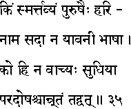
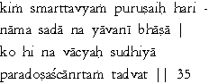

|

|
Verse 35 - Meaning:
Q: What (kim) is fit to be remembered (smartavyam) always by man ? (purusaih)
A: The Holy Name of the Lord (Hari-naama) always (sadaa), and not (na) the speech (bhaasaa) of the unregenerate ones. (yaavanii)
Q:What (ko) should a wise man (sudhiya) avoid speaking ? (na-vaacyah)
A: Talking about others' faults (para-doshaa) and speaking falsehood (caanrtam tadvat)
|